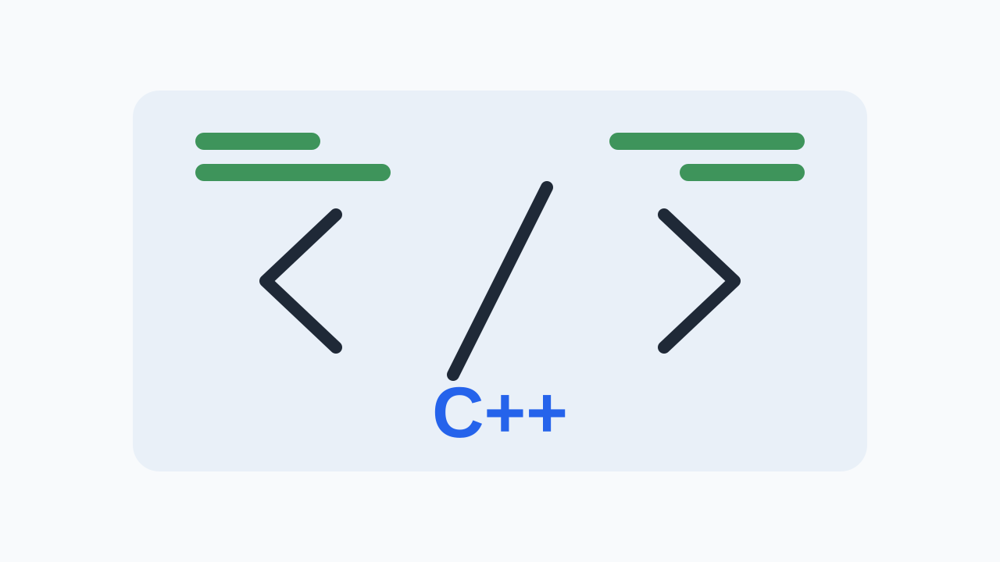

Camera HAL SW Newsletter
이번 주 뉴스레터에서는 Android의 새로운 하이브리드 AI 추론 및 Gemini 모델 지원, C++26의 assert() 매크로 개선, Claude Code AI 에이전트의 업데이트, FreeBSD 15.1 Beta 출시 소식, 그리고 2026년 5월 Android 보안 게시판 발행 소식을 다룹니다. 이 변화들은 Camera HAL의 이미지 데이터 처리, 디버깅 효율성, AI 워크플로우 통합, 그리고 보안 취약점 관리에 직접적인 영향을 미칠 수 있습니다.
1. 이번 주 3줄 브리핑
- Android에서 하이브리드 AI 추론 및 새로운 Gemini 모델 지원이 추가되어, 카메라 HAL은 AI 모델을 위한 효율적인 이미지 데이터 경로 및 NPU/GPU/ISP 활용을 검토해야 합니다.
- C++26의 assert() 매크로 개선은 HAL 코드의 디버깅 효율성을 높일 잠재력이 있으며, 기존 assert() 사용 패턴을 점검하고 개선된 기능을 활용할 방안을 모색해야 합니다.
- 2026년 5월 Android 보안 게시판이 발행되었으므로, HAL 관련 취약점이 있는지 즉시 확인하고 필요한 보안 패치를 적용해야 합니다.
2. AI plus camera input path or HAL workflow

Claude Code 2.1.128 출시: AI 코딩 에이전트의 HAL 개발 워크플로우 영향
- 릴리스 날짜: 2026년 5월 4일
- 버전/릴리스: Claude Code 2.1.128
- API/구성 요소: Claude Code / AI coding agent
- 동작 변경: 새로운 기능 및 개선 사항이 포함된 Claude Code 2.1.128 버전이 출시되었습니다. 플러그인 아카이브(.zip) 지원 및 명령어 개선이 포함됩니다.
AI 코딩 에이전트는 개발자가 코드 작성, 디버깅, 테스트, 문서화 등 다양한 개발 작업을 자동화하고 효율화하도록 돕는 도구입니다. 이러한 에이전트의 발전은 개발 워크플로우를 혁신하고 생산성을 크게 향상시킬 잠재력을 가지고 있습니다.
AI 코딩 에이전트는 Camera HAL 개발 워크플로우에 다음과 같은 방식으로 통합될 수 있습니다. 첫째, 특정 카메라 메타데이터 키 또는 스트림 구성에 대한 C++ 코드 스니펫을 생성하여 반복적인 코딩 작업을 줄일 수 있습니다. 둘째, 복잡한 버퍼 수명 주기 관리 또는 동시성 문제에서 잠재적인 버그 패턴을 식별하고 수정 제안을 제공할 수 있습니다. 셋째, CTS/VTS/Camera ITS 실패 로그를 분석하여 HAL의 특정 영역에서 발생한 문제를 진단하는 데 도움을 줄 수 있습니다. 플러그인 아카이브 지원은 HAL 팀이 내부 도구 및 지식을 에이전트에 통합하는 유연성을 제공합니다.
- 2주 이내에 Claude Code 2.1.128의 새로운 플러그인 기능을 활용하여 Camera HAL의 특정 코드베이스(예: `camera3_device.cpp` 또는 `vendor_camera_hal.cpp`)에 대한 코드 리뷰 또는 리팩토링 제안을 생성하는 실험을 수행합니다.
- AI 에이전트가 Camera HAL의 `request/result metadata` 키 또는 `stream configuration` 관련 C++ 코드 스니펫을 얼마나 정확하게 생성하는지 평가하고, 생성된 코드의 빌드 성공률 및 런타임 동작을 확인합니다.
- HAL 팀의 개발자 리뷰 시간을 측정하고, AI 에이전트의 도움을 받았을 때 코드 품질 또는 버그 발견율에 유의미한 변화가 있는지 2주 이내의 단기 PoC를 통해 간접적으로 평가합니다.
Claude Code 2.1.128과 같은 AI 코딩 에이전트의 발전은 HAL 개발 워크플로우의 생산성을 향상시킬 잠재력이 있으므로, 코드 생성 및 버그 진단 측면에서 활용 가능성을 탐색해야 합니다.
3. Linux Camera / V4L2
FreeBSD 15.1 Beta 출시: Android Linux 커널 카메라 스택에 대한 간접적 시사점
- 릴리스 날짜: 2026년 5월 2일
- 버전/릴리스: FreeBSD 15.1 Beta 1
- API/구성 요소: Linux camera / V4L2 (간접적 관련)
- 동작 변경: FreeBSD 15.1 Beta 1이 출시되었으며, 6월 정식 릴리스를 목표로 합니다.
FreeBSD는 Unix 계열 운영체제로, Linux와 마찬가지로 커널 및 드라이버 개발에 중점을 둡니다. 비록 Android가 Linux 커널을 기반으로 하지만, FreeBSD의 커널 및 드라이버 개발은 때때로 공통된 문제 해결 접근 방식이나 새로운 기술 동향을 공유할 수 있습니다. 특히 미디어 스택이나 하드웨어 드라이버 개선은 V4L2와 같은 표준 인터페이스에 영향을 미칠 수 있습니다.
FreeBSD의 업데이트는 직접적인 Android HAL 요구사항은 아니지만, Linux 커널의 미디어 하위 시스템(V4L2)과 유사한 개념을 공유하는 카메라 드라이버 개발의 일반적인 동향을 파악하는 데 도움이 됩니다. HAL 엔지니어는 FreeBSD의 변경 사항을 통해 버퍼 큐 관리, 포맷 협상, 센서 모드 선택, ISP 튜닝 등에서 발생할 수 있는 새로운 최적화 기법이나 잠재적인 문제점을 간접적으로 예측할 수 있습니다. 이는 vendor kernel의 카메라 드라이버 개발 방향을 이해하고, Android HAL과의 인터페이스를 개선하는 데 장기적인 관점을 제공할 수 있습니다.
- 2주 이내에 FreeBSD 15.1 Beta의 커널 변경 로그 중 `sys/dev/video` 또는 `sys/dev/media` 경로에 해당하는 부분을 검토하여 V4L2 또는 미디어 컨트롤러와 관련된 새로운 기능이나 개선 사항이 있는지 확인합니다.
- 현재 개발 중인 vendor kernel 브랜치에서 FreeBSD의 변경 사항과 유사한 V4L2/미디어 패치가 있는지 확인하고, 해당 패치가 Preview + ImageCapture 스트림 조합의 성능 또는 안정성에 미치는 영향을 진단하는 로그를 추가합니다.
- 이 항목을 HAL 백로그 또는 커널 추적 목록에 '참고용'으로 추가하고, 6개월마다 FreeBSD/Linux 미디어 스택의 주요 업데이트를 확인하여 Android HAL에 적용 가능한 인사이트가 있는지 재평가합니다.
FreeBSD 15.1 Beta 출시는 Android Linux 커널 카메라 스택에 대한 직접적인 영향은 없지만, 커널 및 드라이버 개발 동향을 간접적으로 파악하고 장기적인 HAL 설계 관점을 얻는 데 참고할 수 있습니다.
4. Android Camera / Platform API

2026년 5월 Android 보안 게시판 발행: HAL 취약점 점검 필수
- 2026년 5월 Android 보안 게시판이 2026년 5월 1일에 발행되었습니다.
- 게시판은 Android 시스템의 보안 취약점 및 관련 패치 정보를 포함합니다.
Android 보안 게시판은 매월 발행되며, Android 기기의 보안을 강화하기 위한 패치와 권고 사항을 제공합니다. 이는 커널, 프레임워크, 라이브러리, 미디어 구성 요소 등 다양한 시스템 영역의 취약점을 다룹니다. Camera HAL은 Android 시스템의 중요한 구성 요소이므로, 보안 게시판에 언급된 취약점은 HAL 구현에 직접적인 영향을 미칠 수 있습니다.
이번 보안 게시판은 Camera HAL 팀이 HAL 구현의 잠재적 취약점을 검토하고 필요한 보안 패치를 적용해야 함을 의미합니다. 특히, 카메라 드라이버, 이미지 처리 파이프라인, 버퍼 관리, metadata 처리와 관련된 취약점이 있는지 주의 깊게 살펴봐야 합니다. 이러한 취약점은 카메라 앱의 비정상적인 동작, 데이터 유출 또는 서비스 거부 공격으로 이어질 수 있습니다. CTS/VTS 및 Camera ITS 테스트를 통해 패치 적용 후에도 기능적 회귀가 없는지 확인해야 합니다.
- HAL 보안 담당자는 2026년 5월 Android 보안 게시판의 'Kernel Components', 'Media Framework', 'Camera' 섹션을 우선적으로 검토하여 HAL 관련 CVE를 식별하고, 관련 패치 여부를 2026년 5월 10일까지 보고합니다.
- 식별된 HAL 관련 CVE에 대해 영향을 받는 기기 모델 및 HAL 버전을 파악하고, 2026년 5월 17일까지 패치 적용 계획을 수립합니다.
- 패치 적용 후, 해당 CVE와 관련된 보안 테스트 케이스를 CTS/VTS 및 Camera ITS에 추가하거나 기존 테스트를 강화하여 2026년 5월 24일까지 검증을 완료합니다.
2026년 5월 Android 보안 게시판이 발행되었습니다. HAL 팀은 게시판을 검토하여 카메라 관련 취약점을 식별하고, 신속하게 패치를 적용하며, 회귀 테스트를 통해 안정성을 확보해야 합니다.
5. Android Camera / Platform API

Android용 실험적 하이브리드 추론 및 새로운 Gemini 모델 지원
- 2026년 4월 17일, Android Developers Blog에서 새로운 Firebase AI Logic API가 하이브리드 추론을 위해 도입되었음을 발표했습니다.
- 새로운 Gemini 모델, 특히 Gemini Nano Banana 모델에 대한 지원이 추가되었습니다.
- 하이브리드 추론은 온디바이스(on-device)와 클라우드(cloud) 추론을 결합하는 방식입니다.
AI 모델의 추론은 온디바이스에서 직접 실행되거나 클라우드 서버에서 실행될 수 있습니다. 온디바이스 추론은 낮은 지연 시간과 개인 정보 보호 이점을 제공하지만, 기기의 컴퓨팅 리소스에 제약이 있습니다. 클라우드 추론은 더 강력한 컴퓨팅 성능을 제공하지만, 네트워크 지연과 데이터 전송 비용이 발생합니다. 하이브리드 추론은 이 두 가지 접근 방식의 장점을 결합하여, 작업의 복잡성과 리소스 요구 사항에 따라 최적의 추론 위치를 동적으로 선택하는 방식입니다.
새로운 Firebase AI Logic API와 Gemini 모델은 카메라 HAL에 여러 가지 영향을 미칠 수 있습니다. 첫째, AI 추론을 위한 카메라 스트림(예: `ImageAnalysis` 유스케이스)의 요구 사항이 변경될 수 있습니다. HAL은 AI 모델이 필요로 하는 특정 해상도, 형식, 프레임 속도를 효율적으로 제공해야 합니다. 둘째, 하이브리드 추론 결정에 따라 온디바이스 NPU/GPU/ISP의 부하가 달라질 수 있으며, HAL은 이러한 리소스 경합을 관리하고 최적의 성능을 보장해야 합니다. 셋째, AI 추론 결과가 카메라 메타데이터로 다시 주입되어 후속 프레임 처리나 카메라 동작에 영향을 미칠 가능성도 있습니다. HAL은 AI 워크로드에 대한 지연 시간, 프레임 드롭, 열 관리 지표를 면밀히 모니터링해야 합니다.
- 새로운 Firebase AI Logic API의 문서화를 2주 이내에 검토하여, AI 추론을 위한 카메라 스트림(예: `ImageAnalysis`)의 권장 해상도, 형식, 프레임 속도 및 버퍼 사용 패턴을 파악하고, HAL이 이를 효율적으로 지원할 수 있는지 분석합니다. (Owner: HAL 아키텍트)
- Preview + ImageCapture + VideoCapture + AI-analysis 스트림 조합 시나리오에서 Gemini Nano Banana 모델을 활용하는 앱을 실행하여, NPU/GPU/ISP의 부하, 카메라 프레임 드롭률, 엔드투엔드 지연 시간, 그리고 기기 열 상태를 2주 이내에 측정합니다. (Owner: 성능 엔지니어)
- AI 추론 결과가 카메라 메타데이터로 다시 주입되는 시나리오(예: `ANDROID_CONTROL_SCENE_MODE` 또는 `ANDROID_STATISTICS_FACE_DETECT_MODE`와 유사한 AI 기반 메타데이터)를 가정하여, HAL이 이러한 메타데이터를 처리하고 카메라 동작에 반영할 수 있는 인터페이스 확장 가능성을 검토합니다. (Owner: HAL 개발팀)
Android에 하이브리드 AI 추론 및 새로운 Gemini 모델 지원이 추가되었습니다. HAL은 AI 모델을 위한 효율적인 이미지 데이터 경로를 제공하고, NPU/GPU/ISP 리소스 경합을 관리하며, AI 워크로드에 최적화된 스트림 구성을 지원해야 합니다.
6. C++ / Toolchain Fallback

C++26: assert() 매크로 개선으로 HAL 디버깅 효율성 향상 기대
- Release/version: C++26 (예정)
- Release date: 2026년 5월 (제안 발표)
- API/component: `assert()` 매크로
- Behavior change: `assert()` 매크로가 실패 시 더 많은 컨텍스트 정보(예: 변수 값, 표현식)를 자동으로 캡처하고 출력할 수 있도록 개선됩니다. 또한, `std::string_view`와 같은 타입의 인수를 지원하여 더 유연한 사용이 가능해집니다.
C++의 `assert()` 매크로는 개발 단계에서 프로그램의 가정을 검증하고, 위반 시 즉시 프로그램을 중단시켜 버그를 조기에 발견하는 데 사용됩니다. 기존 `assert()`는 주로 파일명, 라인 번호, 실패한 표현식만을 제공하여 복잡한 버그의 원인을 파악하기 어려울 때가 있었습니다. C++26에서 제안되는 개선 사항은 이러한 한계를 극복하고, 디버깅 경험을 향상시키는 것을 목표로 합니다.
Camera HAL은 성능에 민감하고 안정성이 중요한 시스템이므로, 개발 및 테스트 단계에서 `assert()`를 적극적으로 활용하여 예기치 않은 상태를 감지합니다. 개선된 `assert()`는 다음 영역에서 HAL 개발에 긍정적인 영향을 미칠 수 있습니다. 첫째, 스트림 구성, 메타데이터 처리, 버퍼 수명 주기 관리와 같은 복잡한 로직에서 `assert` 실패 시 관련 변수 값을 즉시 확인할 수 있어 디버깅 효율성이 높아집니다. 둘째, `std::string_view` 지원은 HAL 내부에서 사용되는 다양한 문자열 기반 식별자나 디버그 메시지를 `assert`에 직접 전달하여 더 명확한 오류 보고를 가능하게 합니다. 셋째, CTS/VTS 또는 Camera ITS 테스트 실패 시, HAL 내부의 `assert`가 더 상세한 정보를 제공한다면 문제의 근본 원인을 파악하는 데 큰 도움이 될 것입니다.
- 2주 내에 HAL 코드베이스에서 `assert()` 사용 현황을 분석하고, 특히 `request/result metadata` 처리, `stream configuration` 유효성 검사, `buffer lifecycle` 관리와 관련된 `assert` 구문에 대한 개선 가능성을 조사합니다.
- C++26 표준 채택 및 Clang/LLVM 툴체인 업데이트 계획을 모니터링하고, 새로운 `assert()` 기능이 안정화되면 `native Android runtime` 환경에서 디버깅 효율성 향상 여부를 측정할 PoC를 계획합니다.
C++26의 `assert()` 매크로 개선은 HAL 디버깅 시 더 상세한 컨텍스트 정보를 제공하여 문제 해결 시간을 단축하고 코드 안정성을 높일 잠재력이 있습니다. 향후 툴체인 업데이트 시 HAL 코드에 적용 가능성을 검토해야 합니다.
이번 주 실행 항목
- 2026년 5월 Android 보안 게시판이 공개되는 즉시, 카메라 HAL 관련 CVE 항목을 확인하고 해당 취약점이 현재 제품에 영향을 미치는지 분석합니다. (Owner: 보안 담당 엔지니어)
- 현재 카메라 HAL 코드베이스에서 사용되는 `assert()` 매크로 호출 지점을 식별하고, 각 지점에서 실패 시 어떤 추가적인 변수 값이나 상태 정보가 디버깅에 유용할지 목록화합니다. (Owner: HAL 개발팀)
- Claude Code 2.1.128의 Changelog를 상세히 검토하여, 카메라 HAL 개발에 직접적으로 적용 가능한 코드 생성, 디버깅, 리팩토링 기능 개선 사항을 2주 이내에 식별하고 팀에 공유합니다. (Owner: HAL 개발팀)
- FreeBSD 15.1 Beta 1의 커널 및 드라이버 관련 릴리스 노트를 2주 이내에 검토하여, 메모리 관리, 동시성, 전력 효율성 측면에서 Android Linux 커널 V4L2 드라이버에 적용 가능한 잠재적 개선 아이디어를 식별합니다. (Owner: 커널 드라이버 엔지니어)
- 새로운 Firebase AI Logic API의 문서화를 2주 이내에 검토하여, AI 추론을 위한 카메라 스트림(예: `ImageAnalysis`)의 권장 해상도, 형식, 프레임 속도 및 버퍼 사용 패턴을 파악하고, HAL이 이를 효율적으로 지원할 수 있는지 분석합니다. (Owner: HAL 아키텍트)